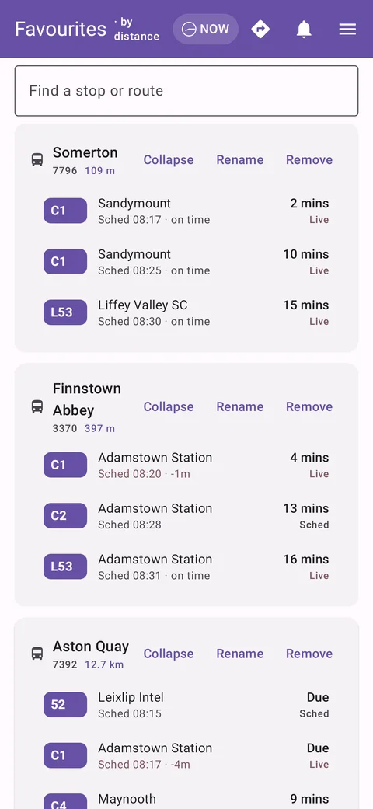
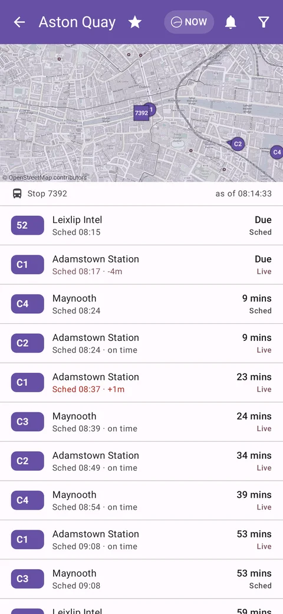
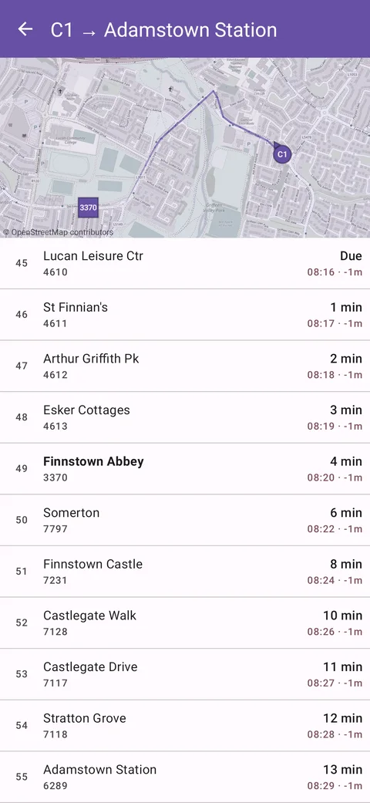
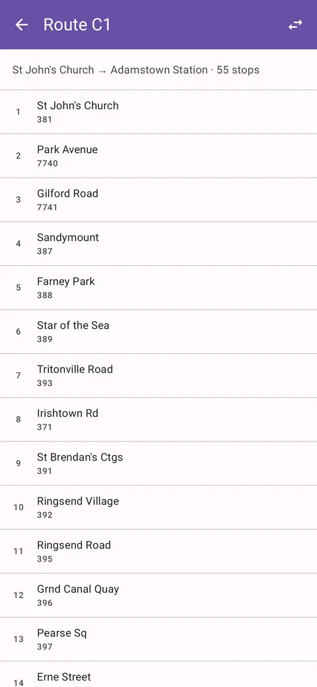
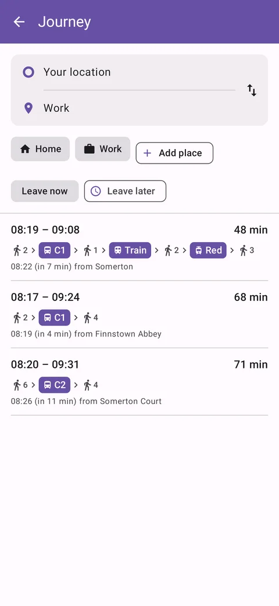
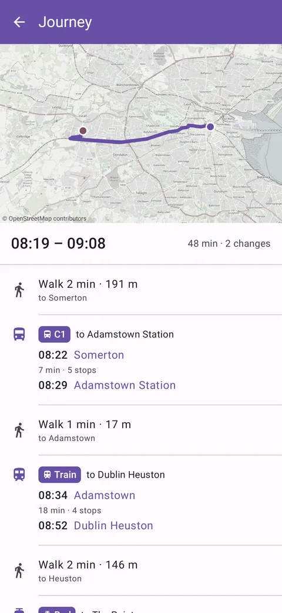
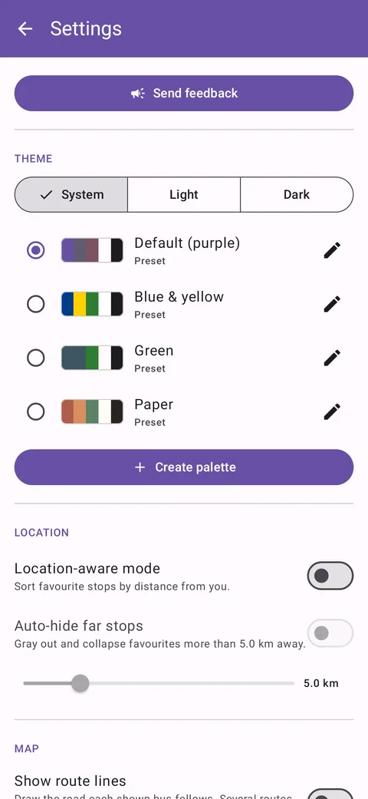
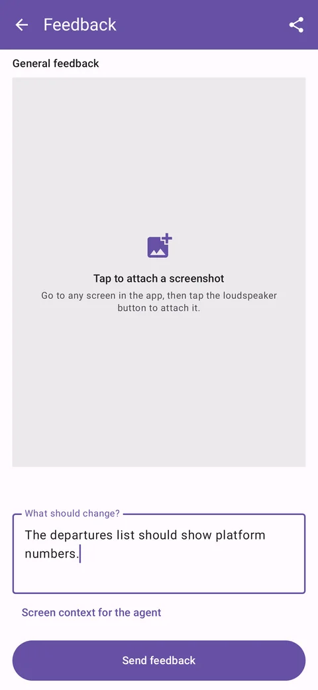

Screenshots








Downloads
| Build | Kind | Size | Date | Changes | SHA-256 |
|---|---|---|---|---|---|
| Iompar 1.16 | release preview | 25 MB | 2026-10-13 | Preview from the route-planning branch: plan a journey by foot, bus, Luas and train, and save places such as home and work. Journey planning is not yet switched on on the server. | a0bf659bdc889ce5d8fc8c215a3be7dccd0720d1970ab5d16a2e020560370777 |
| Iompar 1.16 | debug preview | 33 MB | 2026-10-13 | 03d89e3869573a4dd000f9da16372872deb9e2da6dcccb100c65b1fbdf78b96b | |
| Iompar 1.15 | release | 25 MB | 2026-10-13 | Choose light or dark regardless of the phone's setting. Maps stay sharp when you zoom in. | 19e962af74e465e73c296bceb09f733765b01940c0f264a60822628040a7a4f0 |
| Iompar 1.15 | debug | 33 MB | 2026-10-13 | c01ee671f62527beec9ba53004232c31986e55db85a3e28a6f48696ab6b36f7b | |
| Iompar 1.13 | release | 25 MB | 2026-10-09 | Send feedback from Settings, with a screenshot of any screen attached. | c9aa4c289123309904b5334e5578757f5658b02dfbdd535dac41489d10465221 |
Google Play is the recommended way to install. Play, these release downloads and the debug downloads are each signed differently, so one can't be installed over another: uninstall first to switch. Debug builds are for testing.